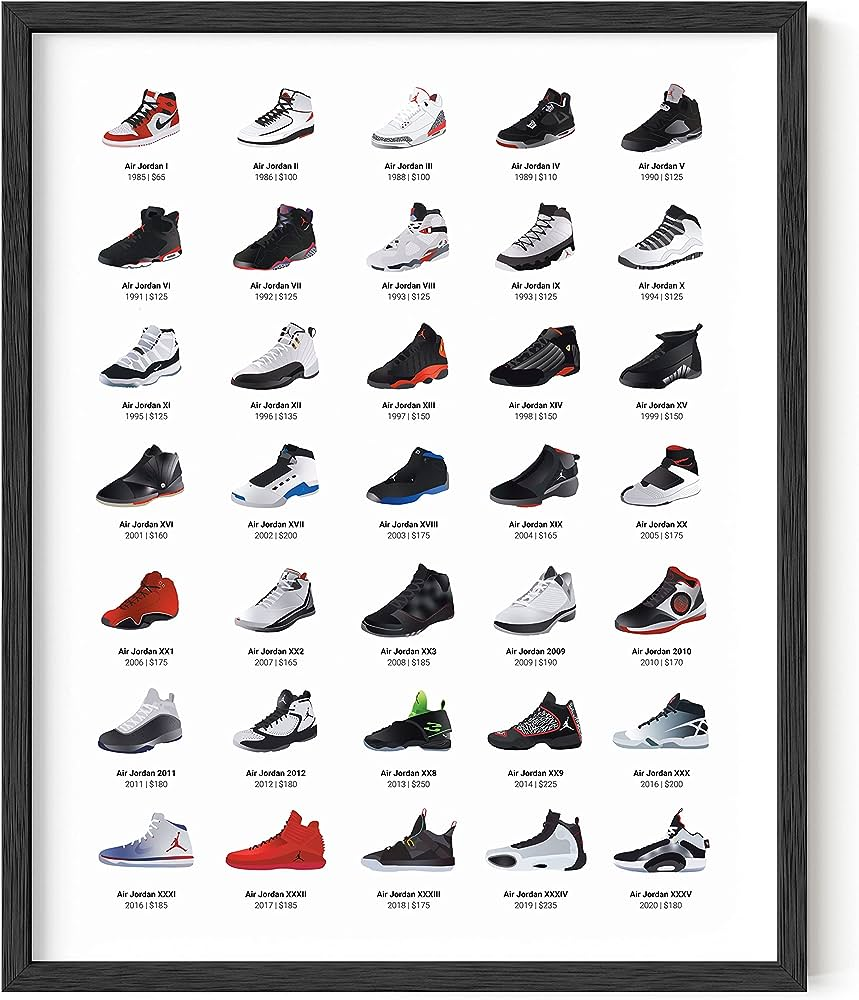
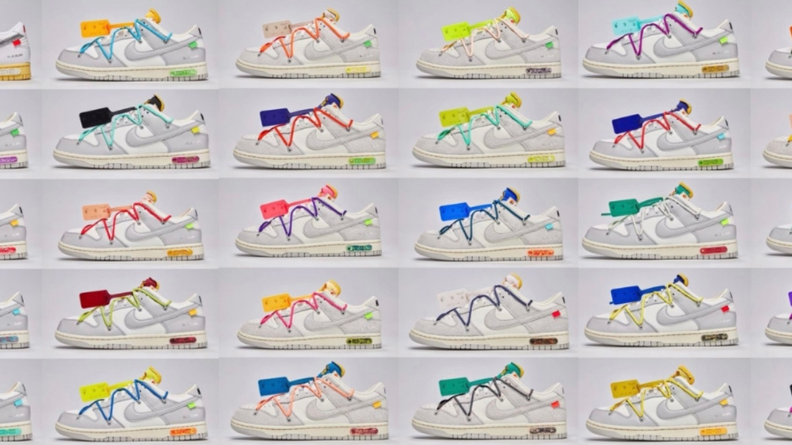

Debuted in 1985 Michael Jordan brought his sneakers to the court. From first getting banned in the NBA for a short time, now with 38 editions in total and being one of the most recongized shoes in the world. Jordans run very deep in my family, I make sure to keep my family up to date with their shoe game.

Air Jordan Charts
Nike
Nike which was founded in 1964, but was not nike at first. It was actually called Blue Ribbon Sports, but was later in 1971 renamed as Nike. Named after the goddess of victory, Nike has become one of the most if not the most popular sneaker brand. Although I feel like this is due to the Jordan collab, I still owe alot of nikes that aren't a collab.

Nike Dunks
Reebok
Reebok found in 1958 was on of the first companys to release shoes with spikes. Although Reebok brand has been fading out and isn't as popular as it used to be, I feel they are some classics that no one can deny the freshness they got.